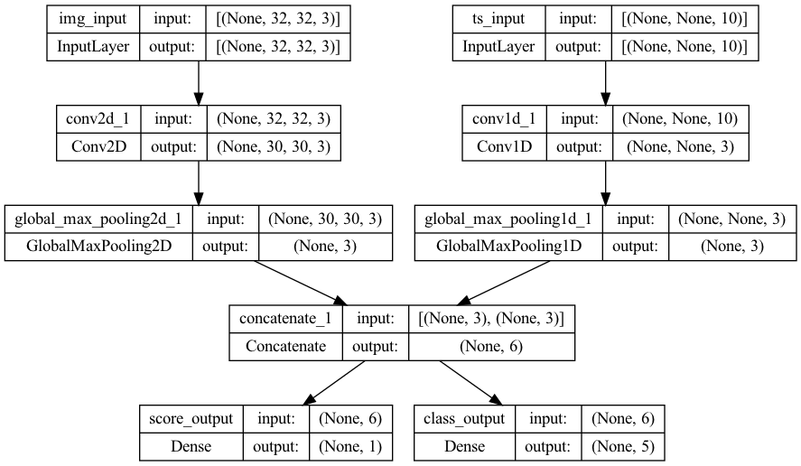

library(tensorflow)
library(keras)Training & evaluation with the built-in methods
Complete guide to training & evaluation with
fit() and evaluate().
Setup
Introduction
This guide covers training, evaluation, and prediction (inference) models when using built-in APIs for training & validation.
If you are interested in leveraging fit() while specifying your own training step function, see the Customizing what happens in fit() guide.
If you are interested in writing your own training & evaluation loops from scratch, see the guide “writing a training loop from scratch”.
In general, whether you are using built-in loops or writing your own, model training & evaluation works strictly in the same way across every kind of Keras model – Sequential models, models built with the Functional API, and models written from scratch via model subclassing.
This guide doesn’t cover distributed training, which is covered in our guide to multi-GPU & distributed training.
API overview: a first end-to-end example
When passing data to the built-in training loops of a model, you should either use NumPy arrays (if your data is small and fits in memory) or tf$data Dataset objects. In the next few paragraphs, we’ll use the MNIST dataset as NumPy arrays, in order to demonstrate how to use optimizers, losses, and metrics.
Let’s consider the following model (here, we build in with the Functional API, but it could be a Sequential model or a subclassed model as well):
inputs <- layer_input(shape = shape(784), name = "digits")Loaded Tensorflow version 2.9.1x <- inputs %>%
layer_dense(units = 64, activation = "relu", name = "dense_1") %>%
layer_dense(units = 64, activation = "relu", name = "dense_2")
outputs <- x %>%
layer_dense(units = 10, activation = "softmax", name = "predictions")
model <- keras_model(inputs = inputs, outputs = outputs)Here’s what the typical end-to-end workflow looks like, consisting of:
- Training
- Validation on a holdout set generated from the original training data
- Evaluation on the test data
We’ll use MNIST data for this example.
c(c(x_train, y_train), c(x_test, y_test)) %<-% dataset_mnist()
x_train <- array_reshape(x_train, c(nrow(x_train), 784))
x_test <- array_reshape(x_test, c(nrow(x_test), 784))
# Transform RGB values into [0,1] range
x_train <- x_train / 255
x_test <- x_test / 255
# Reserve 10,000 samples for validation
x_val <- tail(x_train, 10000)
y_val <- tail(y_train, 10000)
x_train <- head(x_train, 50000)
y_train <- head(y_train, 50000)We specify the training configuration (optimizer, loss, metrics):
model %>% compile(
optimizer = optimizer_rmsprop(), # Optimizer
# Loss function to minimize
loss = loss_sparse_categorical_crossentropy(),
# List of metrics to monitor
metrics = list(metric_sparse_categorical_accuracy()),
)We call fit(), which will train the model by slicing the data into “batches” of size batch_size, and repeatedly iterating over the entire dataset for a given number of epochs.
history <- model %>% fit(
x_train,
y_train,
batch_size = 64,
epochs = 2,
# We pass some validation for
# monitoring validation loss and metrics
# at the end of each epoch
validation_data = list(x_val, y_val),
)The returned history object holds a record of the loss values and metric values during training:
history
Final epoch (plot to see history):
loss: 0.1618
sparse_categorical_accuracy: 0.9531
val_loss: 0.1343
val_sparse_categorical_accuracy: 0.961 We evaluate the model on the test data via evaluate():
# Evaluate the model on the test data using `evaluate`
results <- model %>% evaluate(x_test, y_test, batch_size = 128)
cat("test loss, test acc:", results)test loss, test acc: 0.1367199 0.9599# Generate predictions (probabilities -- the output of the last layer)
# on new data using `predict`
predictions <- predict(model, x_test[1:3,])
dim(predictions)[1] 3 10Now, let’s review each piece of this workflow in detail.
The compile() method: specifying a loss, metrics, and an optimizer
To train a model with fit(), you need to specify a loss function, an optimizer, and optionally, some metrics to monitor.
You pass these to the model as arguments to the compile() method:
model %>% compile(
optimizer = optimizer_rmsprop(learning_rate = 1e-3),
loss = loss_categorical_crossentropy(),
metrics = list(metric_sparse_categorical_accuracy())
)The metrics argument should be a list – your model can have any number of metrics.
If your model has multiple outputs, you can specify different losses and metrics for each output, and you can modulate the contribution of each output to the total loss of the model. You will find more details about this in the Passing data to multi-input, multi-output models section.
Note that if you’re satisfied with the default settings, in many cases the optimizer, loss, and metrics can be specified via string identifiers as a shortcut:
model %>% compile(
optimizer = "rmsprop",
loss = "sparse_categorical_crossentropy",
metrics = list("sparse_categorical_accuracy")
)For later reuse, let’s put our model definition and compile step in functions; we will call them several times across different examples in this guide.
get_uncompiled_model <- function() {
inputs <- layer_input(shape = shape(784), name = "digits")
x <- inputs %>%
layer_dense(units = 64, activation = "relu", name = "dense_1") %>%
layer_dense(units = 64, activation = "relu", name = "dense_2")
outputs <- x %>%
layer_dense(units = 10, activation = "softmax", name = "predictions")
model <- keras_model(inputs = inputs, outputs = outputs)
model
}
get_compiled_model <- function() {
model <- get_uncompiled_model()
model %>% compile(
optimizer = "rmsprop",
loss = "sparse_categorical_crossentropy",
metrics = list("sparse_categorical_accuracy"),
)
model
}Many built-in optimizers, losses, and metrics are available
In general, you won’t have to create your own losses, metrics, or optimizers from scratch, because what you need is likely to be already part of the Keras API:
Optimizers:
optimizer_sgd()(with or without momentum)optimizer_rmsprop()optimizer_adam()- etc.
Losses:
loss_mean_squared_error()loss_kl_divergence()loss_cosine_similarity()- etc.
Metrics:
metric_auc()metric_precision()metric_recall()- etc.
Custom losses
If you need to create a custom loss, Keras provides two ways to do so.
The first method involves creating a function that accepts inputs y_true and y_pred. The following example shows a loss function that computes the mean squared error between the real data and the predictions:
custom_mean_squared_error <- function(y_true, y_pred) {
tf$math$reduce_mean(tf$square(y_true - y_pred))
}
model <- get_uncompiled_model()
model %>% compile(optimizer = optimizer_adam(), loss = custom_mean_squared_error)
# We need to one-hot encode the labels to use MSE
y_train_one_hot <- tf$one_hot(y_train, depth = 10L)
model %>% fit(x_train, y_train_one_hot, batch_size = 64, epochs = 1)If you need a loss function that takes in parameters beside y_true and y_pred, you can subclass the tf$keras$losses$Loss class and implement the following two methods:
initialize(): accept parameters to pass during the call of your loss functioncall(y_true, y_pred): use the targets (y_true) and the model predictions (y_pred) to compute the model’s loss
Let’s say you want to use mean squared error, but with an added term that will de-incentivize prediction values far from 0.5 (we assume that the categorical targets are one-hot encoded and take values between 0 and 1). This creates an incentive for the model not to be too confident, which may help reduce overfitting (we won’t know if it works until we try!).
Here’s how you would do it:
custom_mse <- new_loss_class(
classname = "custom_mse",
initialize = function(regularization_factor = 0.1, name = "custom_mse") {
super()$`__init__`(name = name)
self$regularization_factor <- regularization_factor
},
call = function(y_true, y_pred) {
mse <- tf$math$reduce_mean(tf$square(y_true - y_pred))
reg <- tf$math$reduce_mean(tf$square(0.5 - y_pred))
mse + reg * self$regularization_factor
}
)
model <- get_uncompiled_model()
model %>% compile(optimizer = optimizer_adam(), loss = custom_mse())
y_train_one_hot <- tf$one_hot(y_train, depth = 10L)
model %>% fit(x_train, y_train_one_hot, batch_size = 64, epochs = 1)Custom metrics
If you need a metric that isn’t part of the API, you can easily create custom metrics by subclassing the tf$keras$metrics$Metric class. You will need to implement 4 methods:
initialize(), in which you will create state variables for your metric.update_state(y_true, y_pred, sample_weight = NULL), which uses the targets y_true and the model predictions y_pred to update the state variables.result(), which uses the state variables to compute the final results.reset_state(), which reinitializes the state of the metric.
State update and results computation are kept separate (in update_state() and result(), respectively) because in some cases, the results computation might be very expensive and would only be done periodically.
Here’s a simple example showing how to implement a CategoricalTRUEPositives metric that counts how many samples were correctly classified as belonging to a given class:
categorical_true_positives <- new_metric_class(
classname = "categorical_true_positives",
initialize = function(name = "categorical_true_positives", ...) {
super()$`__init__`(name, ...)
self$true_positives <- self$add_weight(name = "ctp", initializer = "zeros")
},
update_state = function(y_true, y_pred, sample_weight = NULL) {
y_pred <- tf$reshape(tf$argmax(y_pred, axis = 1L), shape = c(-1L,1L))
values <- tf$cast(y_true, "int32") == tf$cast(y_pred, "int32")
values <- tf$cast(values, "float32")
if (!is.null(sample_weight)) {
sample_weight <- tf$cast(sample_weight, "float32")
values <- tf$multiply(values, sample_weight)
}
self$true_positives$assign_add(tf$reduce_sum(values))
},
result = function() {
self$true_positives
},
reset_state = function() {
self$true_positives$assign(0.0)
}
)
model <- get_uncompiled_model()
model %>% compile(
optimizer = optimizer_rmsprop(learning_rate = 1e-3),
loss = loss_sparse_categorical_crossentropy(),
metrics = list(categorical_true_positives()),
)
model %>% fit(x_train, y_train, batch_size = 64, epochs = 3)Handling losses and metrics that don’t fit the standard signature
The overwhelming majority of losses and metrics can be computed from y_true and y_pred, where y_pred is an output of your model – but not all of them. For instance, a regularization loss may only require the activation of a layer (there are no targets in this case), and this activation may not be a model output.
In such cases, you can call self$add_loss(loss_value) from inside the call method of a custom layer. Losses added in this way get added to the “main” loss during training (the one passed to compile()). Here’s a simple example that adds activity regularization (note that activity regularization is built-in in all Keras layers – this layer is just for the sake of providing a concrete example):
layer_activity_regularization <- new_layer_class(
classname = "activity_regularization",
call = function(inputs) {
self$add_loss(tf$reduce_sum(inputs) * 0.1)
inputs # Pass-through layer.
}
)
inputs <- layer_input(shape = shape(784), name = "digits")
x <- layer_dense(inputs, 64, activation = "relu", name = "dense_1")
# Insert activity regularization as a layer
x <- layer_activity_regularization(x)
x <- layer_dense(x, 64, activation = "relu", name = "dense_2")
outputs <- layer_dense(x, 10, name = "predictions")
model <- keras_model(inputs = inputs, outputs = outputs)
model %>% compile(
optimizer = optimizer_rmsprop(learning_rate = 1e-3),
loss = loss_sparse_categorical_crossentropy(from_logits = TRUE)
)
# The displayed loss will be much higher than before
# due to the regularization component.
model %>% fit(x_train, y_train, batch_size = 64, epochs = 1)You can do the same for logging metric values, using add_metric():
layer_metric_logging <- new_layer_class(
"metric_logging",
call = function(inputs) {
self$add_metric(
keras$backend$std(inputs),
name = "std_of_activation",
aggregation = "mean"
)
inputs
}
)
inputs <- layer_input(shape = shape(784), name = "digits")
x <- layer_dense(inputs, 64, activation = "relu", name = "dense_1")
# Insert std logging as a layer.
x <- layer_metric_logging(x)
x <- layer_dense(x, 64, activation = "relu", name = "dense_2")
outputs <- layer_dense(x, 10, name = "predictions")
model <- keras_model(inputs = inputs, outputs = outputs)
model %>% compile(
optimizer = optimizer_rmsprop(learning_rate = 1e-3),
loss = loss_sparse_categorical_crossentropy(from_logits = TRUE)
)
model %>% fit(x_train, y_train, batch_size = 64, epochs = 1)In the Functional API, you can also call model$add_loss(loss_tensor), or model$add_metric(metric_tensor, name, aggregation).
Here’s a simple example:
inputs <- layer_input(shape = shape(784), name = "digits")
x1 <- layer_dense(inputs, 64, activation = "relu", name = "dense_1")
x2 <- layer_dense(x1, 64, activation = "relu", name = "dense_2")
outputs <- layer_dense(x2, 10, name = "predictions")
model <- keras_model(inputs = inputs, outputs = outputs)
model$add_loss(tf$reduce_sum(x1) * 0.1)
model$add_metric(
keras$backend$std(x1),
name = "std_of_activation",
aggregation = "mean"
)
model %>% compile(
optimizer = optimizer_rmsprop(learning_rate = 1e-3),
loss = loss_sparse_categorical_crossentropy(from_logits = TRUE)
)
model %>% fit(x_train, y_train, batch_size = 64, epochs = 1)Note that when you pass losses via add_loss(), it becomes possible to call compile() without a loss function, since the model already has a loss to minimize.
Consider the following LogisticEndpoint layer: it takes as inputs targets & logits, and it tracks a crossentropy loss via add_loss(). It also tracks classification accuracy via add_metric().
layer_logistic_endpoint <- new_layer_class(
"logistic_endpoint",
initialize = function(name = NULL) {
super()$`__init__`(name = name)
self$loss_fn <- loss_binary_crossentropy(from_logits = TRUE)
self$accuracy_fn <- metric_binary_accuracy()
},
call = function(targets, logits, sample_weights = NULL) {
# Compute the training-time loss value and add it
# to the layer using `self$add_loss()`.
loss <- self$loss_fn(targets, logits, sample_weights)
self$add_loss(loss)
# Log accuracy as a metric and add it
# to the layer using `self$add_metric()`.
acc <- self$accuracy_fn(targets, logits, sample_weights)
self$add_metric(acc, name = "accuracy")
# Return the inference-time prediction tensor (for `.predict()`).
tf$nn$softmax(logits)
}
)You can use it in a model with two inputs (input data & targets), compiled without a loss argument, like this:
inputs <- layer_input(shape = shape(3), name = "inputs")
targets <- layer_input(shape = shape(10), name = "targets")
logits <- layer_dense(inputs, 10)
predictions <- layer_logistic_endpoint(name = "predictions")(logits, targets)
model <- keras_model(inputs = list(inputs, targets), outputs = predictions)
model %>% compile(optimizer = "adam") # No loss argument!
data <- list(
"inputs" = array(runif(3*3), dim = c(3,3)),
"targets" = array(runif(3*10), dim = c(3, 10))
)
model %>% fit(data, epochs = 1)For more information about training multi-input models, see the section Passing data to multi-input, multi-output models.
Automatically setting apart a validation holdout set
In the first end-to-end example you saw, we used the validation_data argument to pass a listy of arrays (x_val, y_val) to the model for evaluating a validation loss and validation metrics at the end of each epoch.
Here’s another option: the argument validation_split allows you to automatically reserve part of your training data for validation. The argument value represents the fraction of the data to be reserved for validation, so it should be set to a number higher than 0 and lower than 1. For instance, validation_split = 0.2 means “use 20% of the data for validation”, and validation_split = 0.6 means “use 60% of the data for validation”.
The way the validation is computed is by taking the last x% samples of the arrays received by the fit() call, before any shuffling.
Note that you can only use validation_split when training with array data.
model <- get_compiled_model()
model %>% fit(x_train, y_train, batch_size = 64, validation_split = 0.2, epochs = 1)Training & evaluation from TensorFlow Datasets
In the past few paragraphs, you’ve seen how to handle losses, metrics, and optimizers, and you’ve seen how to use the validation_data and validation_split arguments in fit(), when your data is passed as R arrays.
Let’s now take a look at the case where your data comes in the form of a TensorFlow dataset object.
Note
The tfdatasets package in R is an interface for the tf.data module in Python.
The tf.data API is a set of utilities in TensorFlow 2.0 for loading and preprocessing data in a way that’s fast and scalable.
For a complete guide about creating Datasets, see the tf.data documentation.
You can pass a Dataset instance directly to the methods fit(), evaluate(), and predict():
library(tfdatasets)
model <- get_compiled_model()
# First, let's create a training Dataset instance.
# For the sake of our example, we'll use the same MNIST data as before.
train_dataset <- tensor_slices_dataset(list(x_train, y_train))
# Shuffle and slice the dataset.
train_dataset <- train_dataset %>%
dataset_shuffle(1024) %>%
dataset_batch(64)
# Now we get a test dataset.
test_dataset <- list(x_test, y_test) %>%
tensor_slices_dataset() %>%
dataset_batch(64)
# Since the dataset already takes care of batching,
# we don't pass a `batch_size` argument.
model %>% fit(train_dataset, epochs = 3)
# You can also evaluate or predict on a dataset.
result <- model %>% evaluate(test_dataset)
print(result) loss sparse_categorical_accuracy
0.1331247 0.9577000 Note that the Dataset is reset at the end of each epoch, so it can be reused of the next epoch.
If you want to run training only on a specific number of batches from this Dataset, you can pass the steps_per_epoch argument, which specifies how many training steps the model should run using this Dataset before moving on to the next epoch.
If you do this, the dataset is not reset at the end of each epoch, instead we just keep drawing the next batches. The dataset will eventually run out of data (unless it is an infinitely-looping dataset).
model <- get_compiled_model()
# Prepare the training dataset
train_dataset <- list(x_train, y_train) %>%
tensor_slices_dataset() %>%
dataset_shuffle(1024) %>%
dataset_batch(64)
# Only use the 100 batches per epoch (that's 64 * 100 samples)
model %>% fit(train_dataset, epochs = 3, steps_per_epoch = 100)Using a validation dataset
You can pass a Dataset instance as the validation_data argument in fit():
model <- get_compiled_model()
# Prepare the training dataset
train_dataset <- list(x_train, y_train) %>%
tensor_slices_dataset() %>%
dataset_shuffle(1024) %>%
dataset_batch(64)
# Prepare the validation dataset
val_dataset <- list(x_val, y_val) %>%
tensor_slices_dataset() %>%
dataset_batch(64)
model %>% fit(train_dataset, epochs = 1, validation_data = val_dataset)At the end of each epoch, the model will iterate over the validation dataset and compute the validation loss and validation metrics.
If you want to run validation only on a specific number of batches from this dataset, you can pass the validation_steps argument, which specifies how many validation steps the model should run with the validation dataset before interrupting validation and moving on to the next epoch:
model <- get_compiled_model()
# Prepare the training dataset
train_dataset <- list(x_train, y_train) %>%
tensor_slices_dataset() %>%
dataset_shuffle(1024) %>%
dataset_batch(64)
# Prepare the validation dataset
val_dataset <- list(x_val, y_val) %>%
tensor_slices_dataset() %>%
dataset_batch(64)
model %>% fit(
train_dataset,
epochs = 1,
# Only run validation using the first 10 batches of the dataset
# using the `validation_steps` argument
validation_data = val_dataset,
validation_steps = 10,
)Note that the validation dataset will be reset after each use (so that you will always be evaluating on the same samples from epoch to epoch).
The argument validation_split (generating a holdout set from the training data) is not supported when training from Dataset objects, since this feature requires the ability to index the samples of the datasets, which is not possible in general with the Dataset API.
Using sample weighting and class weighting
With the default settings the weight of a sample is decided by its frequency in the dataset. There are two methods to weight the data, independent of sample frequency:
- Class weights
- Sample weights
Class weights
This is set by passing a dictionary to the class_weight argument to Model %>% fit(). This dictionary maps class indices to the weight that should be used for samples belonging to this class.
This can be used to balance classes without resampling, or to train a model that gives more importance to a particular class.
For instance, if class “0” is half as represented as class “1” in your data, you could use Model %>% fit(..., class_weight = list(0= 1., 1= 0.5)).
Here’s an example where we use class weights or sample weights to give more importance to the correct classification of class #5 (which is the digit “5” in the MNIST dataset).
class_weight <- list(
"0" = 1.0,
"1" = 1.0,
"2" = 1.0,
"3" = 1.0,
"4" = 1.0,
# Set weight "2" for class "5",
# making this class 2x more important
"5" = 2.0,
"6" = 1.0,
"7" = 1.0,
"8" = 1.0,
"9" = 1.0
)
model <- get_compiled_model()
model %>% fit(x_train, y_train, class_weight = class_weight, batch_size = 64, epochs = 1)Sample weights
For fine grained control, or if you are not building a classifier, you can use “sample weights”.
- When training from R data: Pass the
sample_weightargument toModel %>% fit(). - When training from tfdatasets or any other sort of iterator: Yield
(input_batch, label_batch, sample_weight_batch)tuples.
A “sample weights” array is an array of numbers that specify how much weight each sample in a batch should have in computing the total loss. It is commonly used in imbalanced classification problems (the idea being to give more weight to rarely-seen classes).
When the weights used are ones and zeros, the array can be used as a mask for the loss function (entirely discarding the contribution of certain samples to the total loss).
sample_weight <- rep(1, length(y_train))
sample_weight[y_train == 5] <- 2.0
model <- get_compiled_model()
model %>% fit(x_train, y_train, sample_weight = sample_weight, batch_size = 64, epochs = 1)Here’s a matching Dataset example:
sample_weight <- rep(1, length(y_train))
sample_weight[y_train == 5] <- 2.0
# Create a Dataset that includes sample weights
# (3rd element in the return tuple).
train_dataset <- list(x_train, y_train, sample_weight) %>%
tensor_slices_dataset()
# Shuffle and slice the dataset.
train_dataset <- train_dataset %>%
dataset_shuffle(1024) %>%
dataset_batch(64)
model <- get_compiled_model()
model %>% fit(train_dataset, epochs = 1)Passing data to multi-input, multi-output models
In the previous examples, we were considering a model with a single input (a tensor of shape (764)) and a single output (a prediction tensor of shape (10)). But what about models that have multiple inputs or outputs?
Consider the following model, which has an image input of shape (32, 32, 3) (that’s (height, width, channels)) and a time series input of shape (NULL, 10) (that’s (timesteps, features)). Our model will have two outputs computed from the combination of these inputs: a “score” (of shape (1)) and a probability distribution over five classes (of shape (5)).
image_input <- layer_input(shape = shape(32, 32, 3), name = "img_input")
timeseries_input <- layer_input(shape = shape(NULL, 10), name = "ts_input")
x1 <- layer_conv_2d(image_input, 3, 3)
x1 <- layer_global_max_pooling_2d(x1)
x2 <- layer_conv_1d(timeseries_input, 3, 3)
x2 <- layer_global_max_pooling_1d(x2)
x <- layer_concatenate(list(x1, x2))
score_output <- layer_dense(x, 1, name = "score_output")
class_output <- layer_dense(x, 5, name = "class_output")
model <- keras_model(
inputs = list(image_input, timeseries_input),
outputs = list(score_output, class_output)
)Let’s plot this model, so you can clearly see what we’re doing here (note that the shapes shown in the plot are batch shapes, rather than per-sample shapes).
keras$utils$plot_model(
model, "img/multi_input_and_output_model.png",
show_shapes = TRUE
)<IPython.core.display.Image object>
At compilation time, we can specify different losses to different outputs, by passing the loss functions as a list:
model %>% compile(
optimizer = optimizer_rmsprop(1e-3),
loss = list(
loss_mean_squared_error(),
loss_categorical_crossentropy()
)
)If we only passed a single loss function to the model, the same loss function would be applied to every output (which is not appropriate here).
Likewise for metrics:
model %>% compile(
optimizer = optimizer_rmsprop(1e-3),
loss = list(
loss_mean_squared_error(),
loss_categorical_crossentropy()
),
metrics = list(
list(
metric_mean_absolute_percentage_error(),
metric_mean_absolute_error()
),
list(
metric_categorical_accuracy()
)
)
)Since we gave names to our output layers, we could also specify per-output losses and metrics via a dict:
model %>% compile(
optimizer = optimizer_rmsprop(1e-3),
loss = list(
score_output = loss_mean_squared_error(),
class_output = loss_categorical_crossentropy()
),
metrics = list(
class_output = list(
metric_categorical_accuracy()
),
score_output = list(
metric_mean_absolute_percentage_error(),
metric_mean_absolute_error()
)
)
)We recommend the use of explicit names and dicts if you have more than 2 outputs.
It’s possible to give different weights to different output-specific losses (for instance, one might wish to privilege the “score” loss in our example, by giving to 2x the importance of the class loss), using the loss_weights argument:
model %>% compile(
optimizer = optimizer_rmsprop(1e-3),
loss = list(
score_output = loss_mean_squared_error(),
class_output = loss_categorical_crossentropy()
),
metrics = list(
class_output = list(
metric_categorical_accuracy()
),
score_output = list(
metric_mean_absolute_percentage_error(),
metric_mean_absolute_error()
)
),
loss_weights = list(score_output = 2.0, class_output = 1.0)
)You could also choose not to compute a loss for certain outputs, if these outputs are meant for prediction but not for training:
# List loss version
model %>% compile(
optimizer = optimizer_rmsprop(1e-3),
loss = list(
NULL,
loss_categorical_crossentropy()
)
)
# Or dict loss version
model %>% compile(
optimizer = optimizer_rmsprop(1e-3),
loss = list(
class_output = loss_categorical_crossentropy()
)
)Passing data to a multi-input or multi-output model in fit() works in a similar way as specifying a loss function in compile: you can pass lists of R arrays (with 1:1 mapping to the outputs that received a loss function) or named list mapping output names to R arrays.
model %>% compile(
optimizer = optimizer_rmsprop(1e-3),
loss = list(
loss_mean_squared_error(),
loss_categorical_crossentropy()
)
)
# Generate dummy NumPy data
img_data <- array(runif(100*32*32*3), dim = c(100, 32, 32, 3))
ts_data <- array(runif(100*20*10), dim = c(100, 20, 10))
score_targets <- array(runif(100), dim = c(100, 1))
class_targets <- array(runif(100*5), dim = c(100, 5))
# Fit on lists
model %>% fit(
list(img_data, ts_data),
list(score_targets, class_targets),
batch_size = 32,
epochs = 1
)
# Alternatively, fit on named lists
model %>% fit(
list("img_input" = img_data, "ts_input" = ts_data),
list("score_output" = score_targets, "class_output" = class_targets),
batch_size = 32,
epochs = 1
)Here’s the Dataset use case: similarly as what we did for R arrays, the Dataset should return a tuple of dicts.
train_dataset <- list(
list("img_input" = img_data, "ts_input" = ts_data),
list("score_output" = score_targets, "class_output" = class_targets)
) %>%
tensor_slices_dataset() %>%
dataset_shuffle(1024) %>%
dataset_batch(64)
model %>% fit(train_dataset, epochs = 1)Using callbacks
Callbacks in Keras are objects that are called at different points during training (at the start of an epoch, at the end of a batch, at the end of an epoch, etc.). They can be used to implement certain behaviors, such as:
- Doing validation at different points during training (beyond the built-in per-epoch validation)
- Checkpointing the model at regular intervals or when it exceeds a certain accuracy threshold
- Changing the learning rate of the model when training seems to be plateauing
- Doing fine-tuning of the top layers when training seems to be plateauing
- Sending email or instant message notifications when training ends or where a certain performance threshold is exceeded
- Etc.
Callbacks can be passed as a list to your call to fit():
model <- get_compiled_model()
callbacks <- list(
callback_early_stopping(
# Stop training when `val_loss` is no longer improving
monitor = "val_loss",
# "no longer improving" being defined as "no better than 1e-2 less"
min_delta = 1e-2,
# "no longer improving" being further defined as "for at least 2 epochs"
patience = 2,
verbose = 1,
)
)
model %>% fit(
x_train,
y_train,
epochs = 20,
batch_size = 64,
callbacks = callbacks,
validation_split = 0.2,
)Many built-in callbacks are available
There are many built-in callbacks already available in Keras, such as:
callback_model_checkpoint(): Periodically save the model.callback_early_stopping(): Stop training when training is no longer improving the validation metrics.callback_tensorboard(): periodically write model logs that can be visualized in TensorBoard (more details in the section “Visualization”).callback_csv_logger(): streams loss and metrics data to a CSV file.- etc.
See the callbacks documentation for the complete list.
Writing your own callback
You can create a custom callback by extending the base class keras$callbacks$Callback. A callback has access to its associated model through the class property self$model.
Make sure to read the complete guide to writing custom callbacks.
Here’s a simple example saving a list of per-batch loss values during training:
callback_loss_history <- new_callback_class(
"loss_history",
on_train_begin = function(logs) {
self$per_batch_losses <- list()
},
on_batch_end = function(batch, logs) {
self$per_batch_losses <- c(
self$per_batch_losses,
logs$get("loss")
)
}
)Checkpointing models
When you’re training model on relatively large datasets, it’s crucial to save checkpoints of your model at frequent intervals.
The easiest way to achieve this is with the callback_model_checkpoint() callback:
model <- get_compiled_model()
callbacks <- list(
callback_model_checkpoint(
# Path where to save the model
# The two parameters below mean that we will overwrite
# the current checkpoint if and only if
# the `val_loss` score has improved.
# The saved model name will include the current epoch.
filepath = "mymodel_{epoch}",
save_best_only = TRUE, # Only save a model if `val_loss` has improved.
monitor = "val_loss",
verbose = 1,
)
)
model %>% fit(
x_train,
y_train,
epochs = 2,
batch_size = 64,
callbacks = callbacks,
validation_split = 0.2
)The callback_model_checkpoint() callback can be used to implement fault-tolerance: the ability to restart training from the last saved state of the model in case training gets randomly interrupted. Here’s a basic example:
# Prepare a directory to store all the checkpoints.
checkpoint_dir <- "./ckpt"
dir.create(checkpoint_dir, showWarnings = FALSE)
make_or_restore_model <- function() {
# Either restore the latest model, or create a fresh one
# if there is no checkpoint available.
checkpoints <- list.files(checkpoint_dir, full.names = TRUE)
details <- file.info(checkpoints)
if (length(checkpoints) > 0) {
latest_checkpoint <- checkpoints[which.max(as.POSIXct(details$mtime))]
cat("Restoring from", latest_checkpoint)
return(load_model_tf(latest_checkpoint))
}
cat("Creating a new model")
get_compiled_model()
}
model <- make_or_restore_model()Restoring from ./ckpt/ckpt-loss=0.31callbacks <- list(
# This callback saves a SavedModel every 100 batches.
# We include the training loss in the saved model name.
callback_model_checkpoint(
filepath = paste0(checkpoint_dir, "/ckpt-loss={loss:.2f}"),
save_freq = 100
)
)
model %>% fit(x_train, y_train, epochs = 1, callbacks = callbacks)You call also write your own callback for saving and restoring models.
For a complete guide on serialization and saving, see the guide to saving and serializing Models.
Using learning rate schedules
A common pattern when training deep learning models is to gradually reduce the learning as training progresses. This is generally known as “learning rate decay”.
The learning decay schedule could be static (fixed in advance, as a function of the current epoch or the current batch index), or dynamic (responding to the current behavior of the model, in particular the validation loss).
Passing a schedule to an optimizer
You can easily use a static learning rate decay schedule by passing a schedule object as the learning_rate argument in your optimizer:
initial_learning_rate <- 0.1
lr_schedule <- learning_rate_schedule_exponential_decay(
initial_learning_rate = initial_learning_rate,
decay_steps = 100000,
decay_rate = 0.96,
staircase = TRUE
)
optimizer <- keras$optimizers$RMSprop(learning_rate = lr_schedule)Several built-in schedules are available: learning_rate_schedule_cosine_decay, learning_rate_schedule_cosine_decay_restarts, learning_rate_schedule_exponential_decay, learning_rate_schedule_inverse_time_decay, learning_rate_schedule_piecewise_constant_decay, learning_rate_schedule_polynomial_decay
Using callbacks to implement a dynamic learning rate schedule
A dynamic learning rate schedule (for instance, decreasing the learning rate when the validation loss is no longer improving) cannot be achieved with these schedule objects, since the optimizer does not have access to validation metrics.
However, callbacks do have access to all metrics, including validation metrics! You can thus achieve this pattern by using a callback that modifies the current learning rate on the optimizer. In fact, this is even built-in as the callback_reduce_lr_on_plateau() callback.
Visualizing loss and metrics during training
The best way to keep an eye on your model during training is to use TensorBoard – a browser-based application that you can run locally that provides you with:
- Live plots of the loss and metrics for training and evaluation
- (optionally) Visualizations of the histograms of your layer activations
- (optionally) 3D visualizations of the embedding spaces learned by your
Embeddinglayers
If you have installed TensorFlow with pip, you should be able to launch TensorBoard from R with:
tensorflow::tensorboard(log_dir = "/full_path_to_your_logs")Using the TensorBoard callback
The easiest way to use TensorBoard with a Keras model and the fit() method is the TensorBoard callback.
In the simplest case, just specify where you want the callback to write logs, and you’re good to go:
callback_tensorboard(
log_dir = "/full_path_to_your_logs",
histogram_freq = 0, # How often to log histogram visualizations
embeddings_freq = 0, # How often to log embedding visualizations
update_freq = "epoch" # How often to write logs (default: once per epoch)
) <keras.callbacks.TensorBoard object at 0x7f8a26ca6850>For more information, see the documentation for the TensorBoard callback.
Environment Details
Tensorflow Version
tensorflow::tf_config()TensorFlow v2.9.1 (~/.virtualenvs/r-tensorflow-site/lib/python3.9/site-packages/tensorflow)
Python v3.9 (~/.virtualenvs/r-tensorflow-site/bin/python)
R Environment Information
sessionInfo()R version 4.2.1 (2022-06-23)
Platform: x86_64-pc-linux-gnu (64-bit)
Running under: Ubuntu 20.04.4 LTS
Matrix products: default
BLAS/LAPACK: /usr/lib/x86_64-linux-gnu/libmkl_rt.so
locale:
[1] LC_CTYPE=en_US.UTF-8 LC_NUMERIC=C
[3] LC_TIME=en_US.UTF-8 LC_COLLATE=en_US.UTF-8
[5] LC_MONETARY=en_US.UTF-8 LC_MESSAGES=en_US.UTF-8
[7] LC_PAPER=en_US.UTF-8 LC_NAME=C
[9] LC_ADDRESS=C LC_TELEPHONE=C
[11] LC_MEASUREMENT=en_US.UTF-8 LC_IDENTIFICATION=C
attached base packages:
[1] stats graphics grDevices utils datasets methods base
other attached packages:
[1] tfdatasets_2.9.0.9000 keras_2.9.0.9000 tensorflow_2.9.0.9000
loaded via a namespace (and not attached):
[1] Rcpp_1.0.9 compiler_4.2.1 base64enc_0.1-3
[4] tools_4.2.1 zeallot_0.1.0 digest_0.6.29
[7] jsonlite_1.8.0 evaluate_0.15 lattice_0.20-45
[10] png_0.1-7 rlang_1.0.4 Matrix_1.4-1
[13] cli_3.3.0 yaml_2.3.5 xfun_0.31
[16] fastmap_1.1.0 stringr_1.4.0 knitr_1.39
[19] generics_0.1.3 htmlwidgets_1.5.4 vctrs_0.4.1
[22] rprojroot_2.0.3 grid_4.2.1 tidyselect_1.1.2
[25] reticulate_1.25-9000 glue_1.6.2 here_1.0.1
[28] R6_2.5.1 rmarkdown_2.14 purrr_0.3.4
[31] magrittr_2.0.3 whisker_0.4 tfruns_1.5.0
[34] htmltools_0.5.2 ellipsis_0.3.2 stringi_1.7.8
Python Environment Information
system2(reticulate::py_exe(), c("-m pip freeze"), stdout = TRUE) |> writeLines()absl-py==1.1.0
asttokens==2.0.5
astunparse==1.6.3
backcall==0.2.0
cachetools==5.2.0
certifi==2022.6.15
charset-normalizer==2.1.0
decorator==5.1.1
dill==0.3.5.1
etils==0.6.0
executing==0.8.3
flatbuffers==1.12
gast==0.4.0
google-auth==2.9.0
google-auth-oauthlib==0.4.6
google-pasta==0.2.0
googleapis-common-protos==1.56.4
grpcio==1.47.0
h5py==3.7.0
idna==3.3
importlib-metadata==4.12.0
importlib-resources==5.8.0
ipython==8.4.0
jedi==0.18.1
keras==2.9.0
Keras-Preprocessing==1.1.2
keras-tuner==1.1.2
kt-legacy==1.0.4
libclang==14.0.1
Markdown==3.3.7
matplotlib-inline==0.1.3
numpy==1.23.1
oauthlib==3.2.0
opt-einsum==3.3.0
packaging==21.3
pandas==1.4.3
parso==0.8.3
pexpect==4.8.0
pickleshare==0.7.5
Pillow==9.2.0
promise==2.3
prompt-toolkit==3.0.30
protobuf==3.19.4
ptyprocess==0.7.0
pure-eval==0.2.2
pyasn1==0.4.8
pyasn1-modules==0.2.8
pydot==1.4.2
Pygments==2.12.0
pyparsing==3.0.9
python-dateutil==2.8.2
pytz==2022.1
PyYAML==6.0
requests==2.28.1
requests-oauthlib==1.3.1
rsa==4.8
scipy==1.8.1
six==1.16.0
stack-data==0.3.0
tensorboard==2.9.1
tensorboard-data-server==0.6.1
tensorboard-plugin-wit==1.8.1
tensorflow==2.9.1
tensorflow-datasets==4.6.0
tensorflow-estimator==2.9.0
tensorflow-hub==0.12.0
tensorflow-io-gcs-filesystem==0.26.0
tensorflow-metadata==1.9.0
termcolor==1.1.0
toml==0.10.2
tqdm==4.64.0
traitlets==5.3.0
typing_extensions==4.3.0
urllib3==1.26.10
wcwidth==0.2.5
Werkzeug==2.1.2
wrapt==1.14.1
zipp==3.8.1
Additional Information
TF Devices:
- PhysicalDevice(name='/physical_device:CPU:0', device_type='CPU')
- PhysicalDevice(name='/physical_device:GPU:0', device_type='GPU')
CPU cores: 12
Date rendered: 2022-07-14
Page render time: 1 minutes and 6 seconds